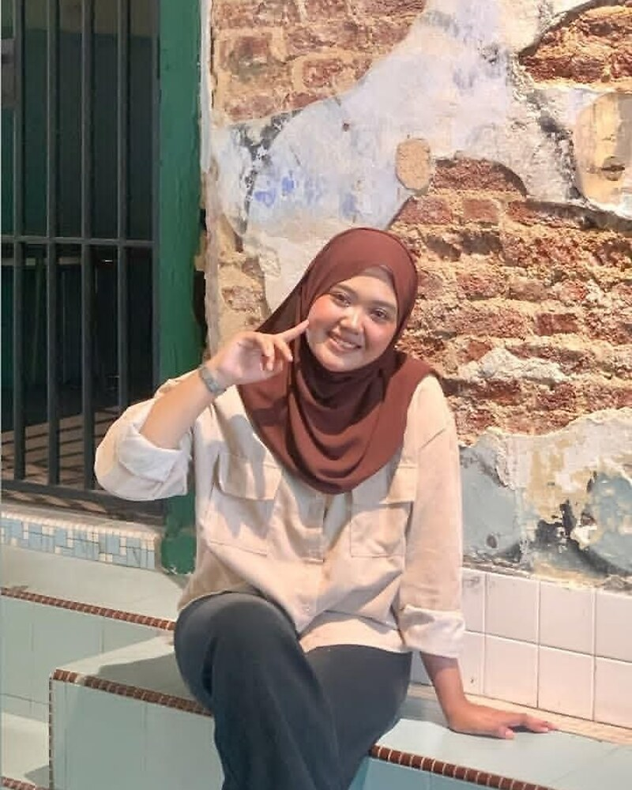

SELAMAT DATANG / PORTFOLIO SAYA !
Nurshakila Marlisa
Hai, saya Kila! Saya merupakan pelajar Diploma Teknologi Maklumat Semester 1 di Kolej Vokasional Kluang. Saya paling berminat dalam pembangunan web, grafik dan multimedia kerana saya suka menggabungkan teknologi dengan kreativiti. Portfolio ini memaparkan perjalanan pembelajaran, kemahiran, projek dan matlamat kerjaya saya dalam bidang Teknologi Maklumat.
“Setiap percubaan adalah sebahagian daripada perjalanan.”

TECH STACK / DIBANGUNKAN DENGAN
Empat teknologi utama yang menyokong portfolio ini.
PERNYATAAN DIRI / KERJAYA
“Saya merupakan seorang pelajar Teknologi Maklumat yang sedang membina pengetahuan dan kemahiran dalam bidang teknologi digital. Melalui pelbagai tugasan dan projek, saya berusaha untuk meningkatkan kemahiran serta mendapatkan pengalaman yang dapat membantu saya dalam membina kerjaya pada masa akan datang.”//
PETA PERJALANAN
SATU PORTFOLIO.
PELBAGAI KEMUNGKINAN.
Selain bidang IT, saya juga berminat dengan bidang Graphic Design & Multimedia. Terokai latar belakang, kemahiran, projek dan matlamat kerjaya saya melalui lapan bahagian yang disusun ringkas.
Teruskan meneroka ↗RUANG KERJA / AUDIO
Teman perjalanan
Audio portfolio selama 1 minit. Tekan play apabila anda bersedia.